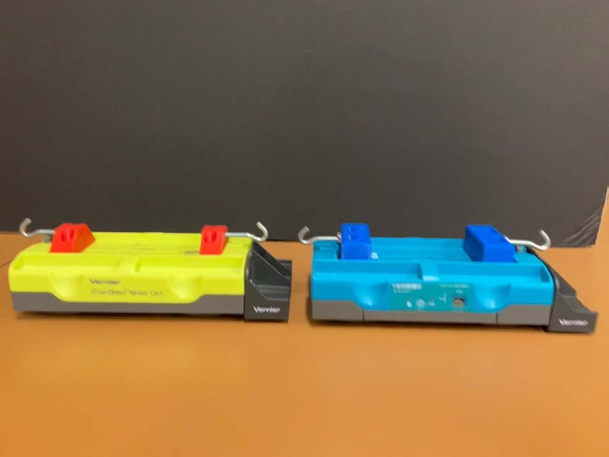
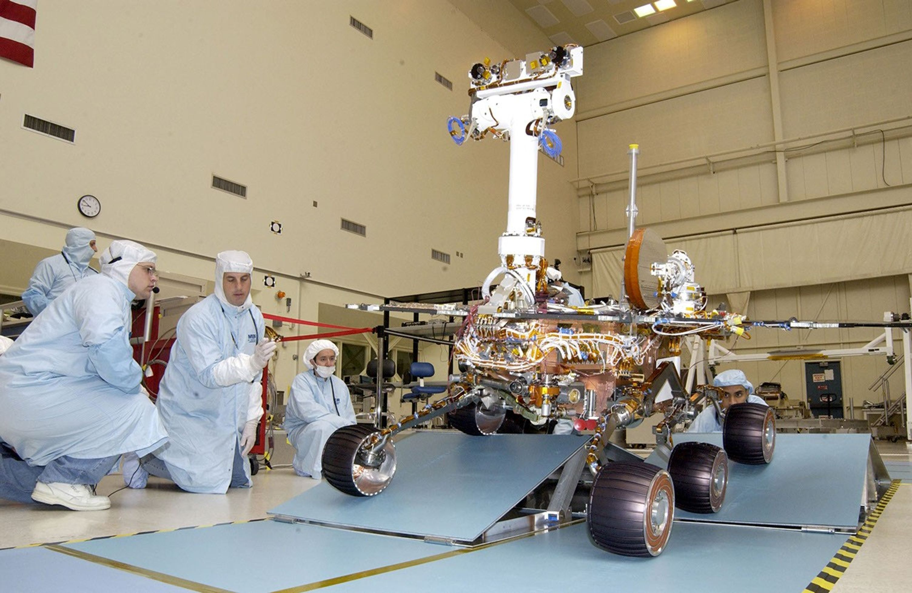
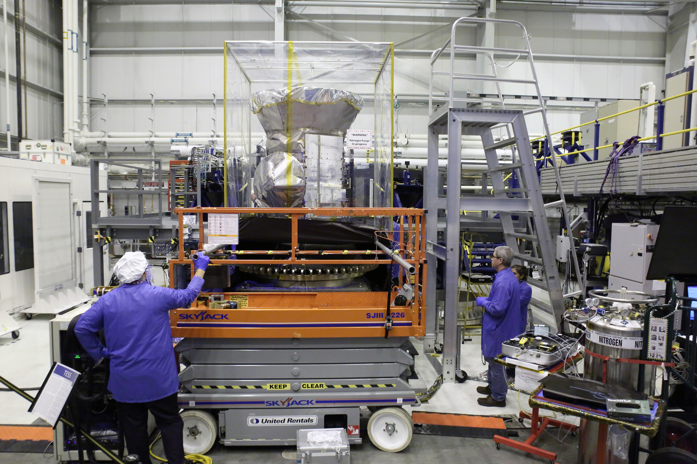
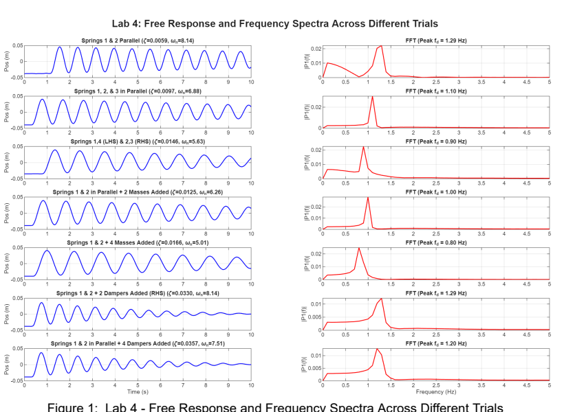
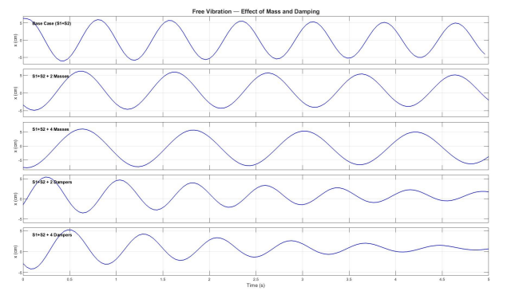
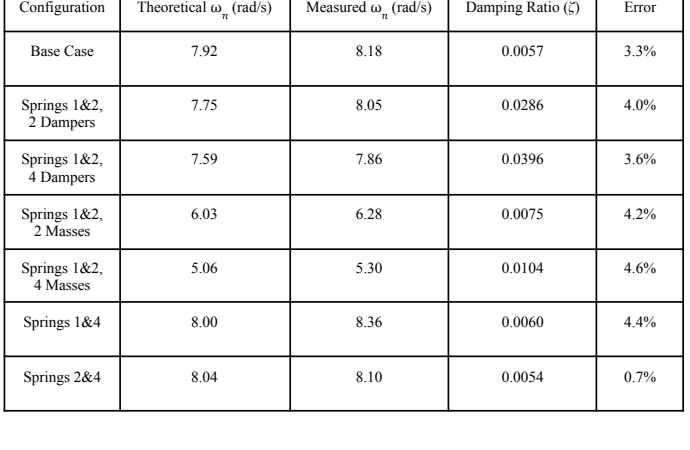
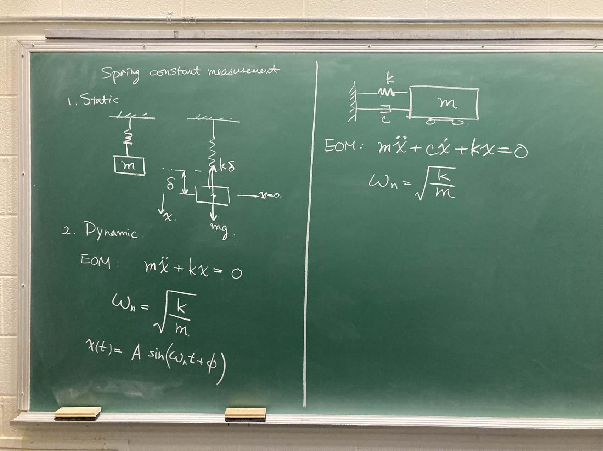
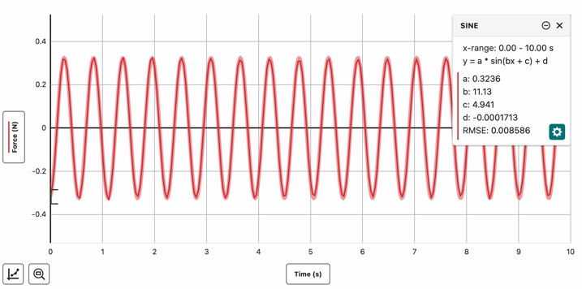

Laboratory guide
Step-by-step sensor checks, spring calibration with a worked example, cart zeroing, seven-case procedure, CSV export and report checklist.
Fall 2026 · Laboratory 4 · October 26–30
Release a spring-mounted cart, measure its position, and identify the two properties engineers need first: how fast it vibrates and how quickly the vibration disappears.

01
A vehicle after a bump, a machine after an impact, and a spacecraft structure after a low-level excitation all produce a transient response. Engineers inspect the frequency and decay to validate models, detect changes and decide whether a design will settle safely.


02
These anonymized plots come from a prior MIE 402 section. They show the evidence students should expect, including experimental variation.



THEORY
The Vernier Go Direct Sensor Cart uses a wheel encoder: wheel rotation gives displacement only when the wheel rolls without slipping. Connect the cart with the correct serial number in Vernier Graphical Analysis, zero near equilibrium, start collection, then release gently without pushing. Export the time and position columns as a raw CSV. Keep a separate CSV for each configuration.
Both springs must remain in tension around equilibrium. If the cart moves by a small positive displacement x [m], the incremental forces are −k1x and −k2x, so keq = k1 + k2 [N/m]. Horizontal gravity is balanced by the track normal reaction. An eddy-current brake dissipates motion through induced currents in the conducting track; over an appropriate speed range its force is approximated by −cẋ, where c [N·s/m] is an equivalent damping coefficient. Even without added magnets, rolling and air losses remain.
The mass m [kg] is the cart plus all moving attachments, including brake hardware. After release the equation is mẍ + cẋ + keqx = 0. Divide by m and define ωn = √(keq/m) [rad/s], ζ = c/(2mωn) [dimensionless], and α = ζ ωn = c/(2m) [s−1]. Then ωd = √(ωn2 − α2) [rad/s], and Td = 2π/ωd [s] for an underdamped system.
The amplitude envelope decreases as exp(−αt). Same-sign peak times give Td. If peaks N complete cycles apart have magnitudes pi and pi+N [m], the decrement per cycle is δ = ln(pi/pi+N)/N = αTd. Thus ζ = δ/√(4π2+δ2). Alternatively, fit ln(p/(1 m)) versus time to obtain slope −α and c = 2mα. The strongest FFT spectral peak is a useful frequency cross-check near fd = 1/Td, but its height is affected by the initial amplitude, record length, bin spacing and decay; it cannot establish damping by itself.
03
The encoder measures position. The model explains why the record oscillates and decays.

mẍ + cẋ + keqx = 0
ωn = √(keq/m) ζ = c/(2√(mkeq))
04
Every accepted run follows the same chain so that comparisons remain meaningful.
Record cart mass, every attached mass, the spring pair, brake-magnet count and initial displacement.
Use a known hanging mass and a small oscillation. Fit the force record and calculate k from the fitted angular frequency.
Change mass, damping or spring pair one at a time. Release without pushing and record until the motion is nearly gone.
Inspect the time trace, selected peaks, exponential decay fit and FFT for one complete case with the GTA.

| Cases | Change | Question |
|---|---|---|
| 1 | base configuration | What is the reference response? |
| 2–3 | two mass levels | Does frequency decrease as √(1/m)? |
| 4–5 | 2 and 4 brake magnets | Does the envelope decay faster? |
| 6–7 | two spring pairs | Does frequency increase with √k? |
CHECKLIST
Use one base case, two added-mass cases, two added-brake cases (2 and 4 magnets), and two different spring-pair stiffness cases; confirm exactly which magnets or other attachments move with the cart. Calibrate each spring separately in the vertical setup with a known hanging mass. The static force balances weight, so the equation about hanging equilibrium has no constant gravity term; a sine-fit angular frequency b is already rad/s and k ≈ mhb2 when damping and spring-mass effects are small. The software fit's phase parameter is not damping coefficient c.
Level the track, verify correct cart connection, start recording before release, use the local procedure's sampling rate (no more than 25 Hz in supplied notes), and save one unmodified raw CSV per case. Check units and record length before analysis.
Use MIE402_Lab4_Analyze_Free_Response.m, not an internal helper. Select a free-response interval after release, supply measured mass and calibrated stiffnesses, check units, remove only the equilibrium offset, find same-sign peaks and estimate period/decay. Preserve raw files.
Compare peak timing against the FFT peak, check the log-peak fit and full-response residuals, and note late noise, wheel slip, spring slack, rubbing, initial pushes and unwanted drift. Report ωn, ωd, α, ζ and c with units and an uncertainty discussion. Compare measured and theoretical frequency for each case without treating a low residual alone as proof of the model.
05
Use the guide as the authoritative procedure. Canvas remains the official source for deadlines.
Open supplementary analysis guide (HTML) · Download main MATLAB script · Read MATLAB instructions
Step-by-step sensor checks, spring calibration with a worked example, cart zeroing, seven-case procedure, CSV export and report checklist.
Predictions, analytical response, numerical comparison, peak-decay fit and FFT interpretation. No programming assignment.
Import Vernier CSV data, remove offset and drift, select peaks, fit decay, compute a one-sided displacement FFT and save results.
Application-first lecture with prior class evidence, model derivation, damping identification and the complete lab workflow.